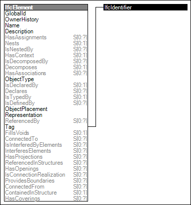

Link to this page
Link to this pagePhysical elements may be further identified via the Tag attribute. This is a human readable identifier such as an element or item number While there is no restriction on usage of such tags, it is recommended the Tag is unique within it's containing scope.
Figure 16 illustrates an instance diagram.
 |
Figure 16 — Element Occurrence Attributes |